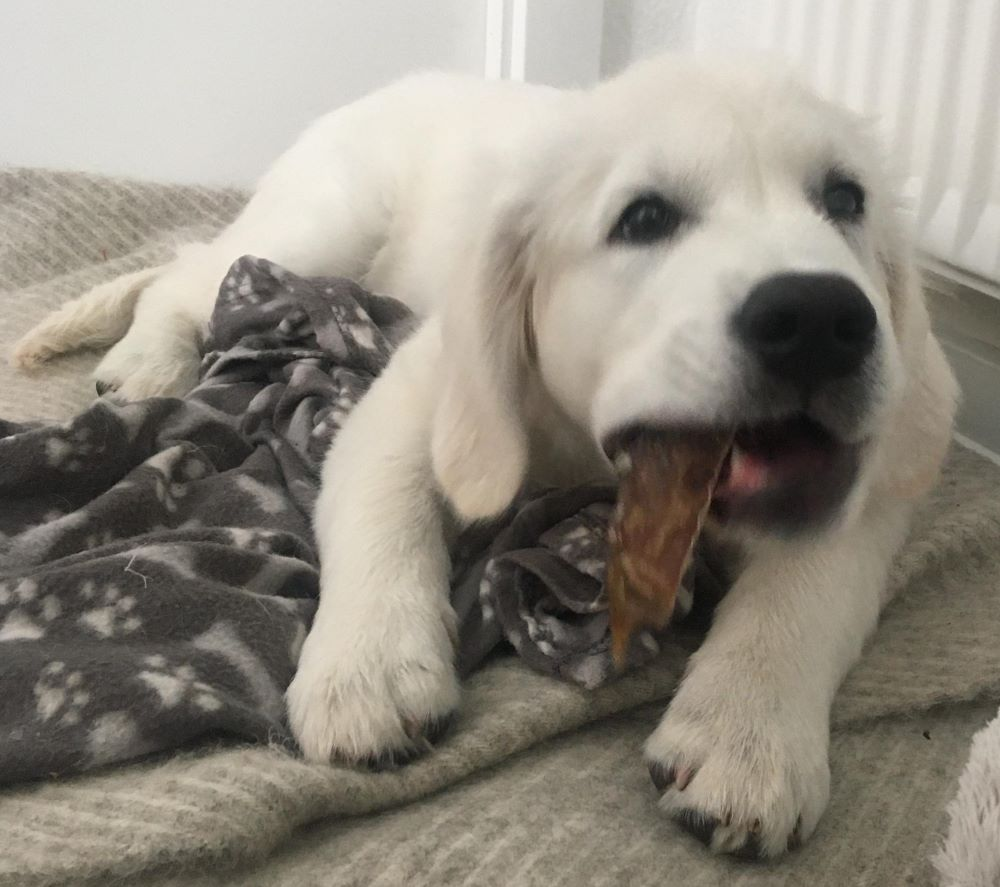

9 ting at have klar til hvalpen
20. oktober 2022 | Før hvalpen flytter ind
Her er 9 ting vi anbefaler, du har klar til, når din nye hvalp flytter ind.
- Halsbånd, sele og snor
- Hundetegn
- Foder
- Godbidder
- Vand- og madskål
- Soveplads
- Legetøj
- Børste og negleklipper
- Hundeposer
Halsbånd, sele og snor
Halsbånd, sele og snor er vigtige, så du kan komme ud med hunden.
Det kan være en god idé at anskaffe sig både halsbånd og sele.
Så vænner hvalpen sig til begge.
Hvalpe vokser hurtigt. Det er ikke nødvendigt at købe et dyrt læderhalsbånd
til den fra start. Gør det kun, hvis det er en prioritet for dig.
Ellers vent til den er voksen med at købe finere tilbehør.
Start med de billige halbånd af nylon. Det samme gælder seler.
Det er heller ikke nødvendigt at have snore i alle størrelser. Køb den,
der passer til hvalpen som voksen med det samme. Overvej om du skal have snore
i forskellige længder. F.eks. én til gåtur og én at binde til træet omme i haven.
Hundetegn
I Danmark er det lovpligtigt at…
- Din hvalp bærer halsbånd med hundetegn fra den er 4 måneder gammel
- Hundetegnet er lavet af rustfrit metal eller et andet lige så holdbart materiale
- Dit navn og fulde adresse står på hundetegnet
Du må gerne bruge initialer i dit navn, f.eks. V. A. Madsen.
Din adresse må gerne forkortes, hvis det giver mening. F.eks. kan Sdr. stå i stedet for Sønder.
Derudover anbefaler vi, at du skriver dit telefonnummer. Så er du nem at få fat i, hvis uheldet er ude.
Foder
Vi anbefaler altid at du køber en pose af det foder, hvalpen har fået ved opdrætteren. Hvalpemaver er følsomme. Hvis du ønsker at give hvalpen noget andet foder, skal du gøre det gradvist.
- Start med at blande en smule af det nye foder i det hvalpen kender.
- Giv hvalpen denne blanding nogle gange.
- Øg langsomt mængden af det nye foder indtil du slet ikke behøver at lave en blanding.
- Hvalpen er nu helt vænnet til det ny foder.
Mange opdrættere tilbyder, at du kan købe foder igennem dem. Så får du nemt fat i præcis det foder, som hvalpen er vant til.
Børste og negleklipper
Det er en god idé at vænne hvalpen til at blive børstet og få klippet negle fra start.
Det gør begge ritualer nemmere for dig når hvalpen bliver voksen.
Det samme gælder at få klippet potehårene. Til det kan du dog fint bruge en almindelig saks.
Hvilken børste du skal købe, afhænger af pelsen på din hvalp.